CYRUS BIKE
운동보상, 전기발전을 동시에
전기료 부담을 줄이고 시간, 장소, 날씨에 제약없이 운동을
하고싶다면!
운동한 시간만틈 보상받는 신개념
실내운동기구 사이러스 바이크
전기료 부담을 줄이고
시간, 장소, 날씨에
제약없이
운동을 하고싶다면!
운동한 시간만틈 보상받는
신개념 실내운동기구 사이러스 바이크
-

전기발전
-
블록체인
-
운동보상
-
인테리어
-
전용어플

-

운동을 에너지로 바꾸는 기술력
사이러스 바이크는 사용자의 페달링 에너지를 전기로 전환하는 스마트 피트니스 기기입니다. 실시간 에너지 환산, 앱 연동, 토큰/포인트 보상 시스템까지 통합하여 사용자에게 새로운 운동 경험을 제공합니다.
-
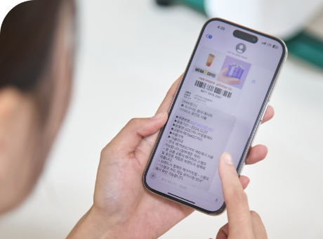
보상을 통한 동기부여
사이러스 바이크는 운동한 시간에 따라 토큰 또는 포인트로 보상하여, 사용자에게 건강한 습관 형성과 지속적인 운동 유도라는 긍정적인 동기를 제공합니다.
-

탄소중립을 실현하는 스마트 피트니스
탄소중립을 실현하는
스마트 피트니스사이러스 바이크는 전기를 생산하는 운동기기로서, 사용자의 움직임을 통해 탄소배출을 줄이는 친환경 솔루션입니다. 이러한 기술은 단순한 피트니스 기기를 넘어, 기업의 ESG 경영 실천과 탄소중립 목표 달성에도 기여할 수 있는 새로운 방향성을 제시합니다.
제품 특장점
사용방법
-
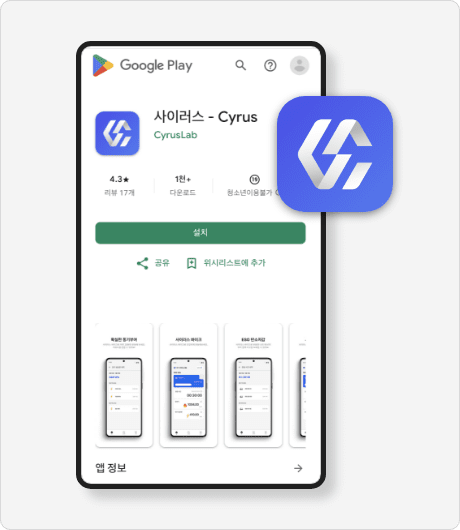
step 1
사이러스 어플을 설치하고
회원가입을 해주세요. -
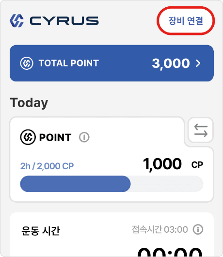
step 2
사이러스 어플의
장비연결을 클릭해주세요. -
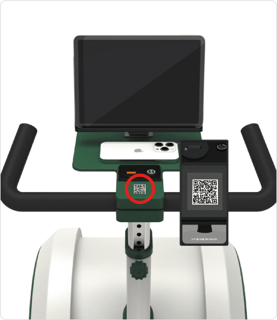
step 3
사이러스 바이크에 부착돤
QR코드를 인식해주세요. -
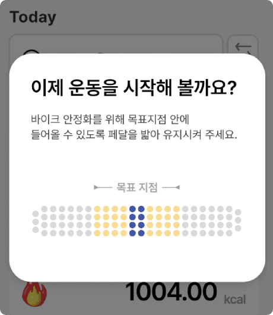
step 4
블루투스 연결이 완료되면
안내에 따라 바이크 안정화 시작 -
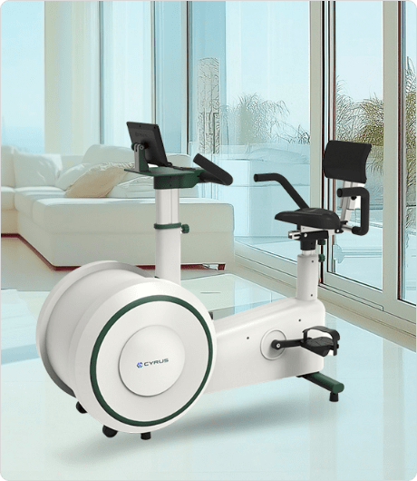
step 5
바이크 안정화가 끝나면
자유롭게 운동해주세요.
PROJECT
특허 & 인증
SEOHAN innotek Certificate
서한이노텍의 모든 제품은 믿고 쓸 수 있는
최고의 등급을 인증받은 제품입니다.
-
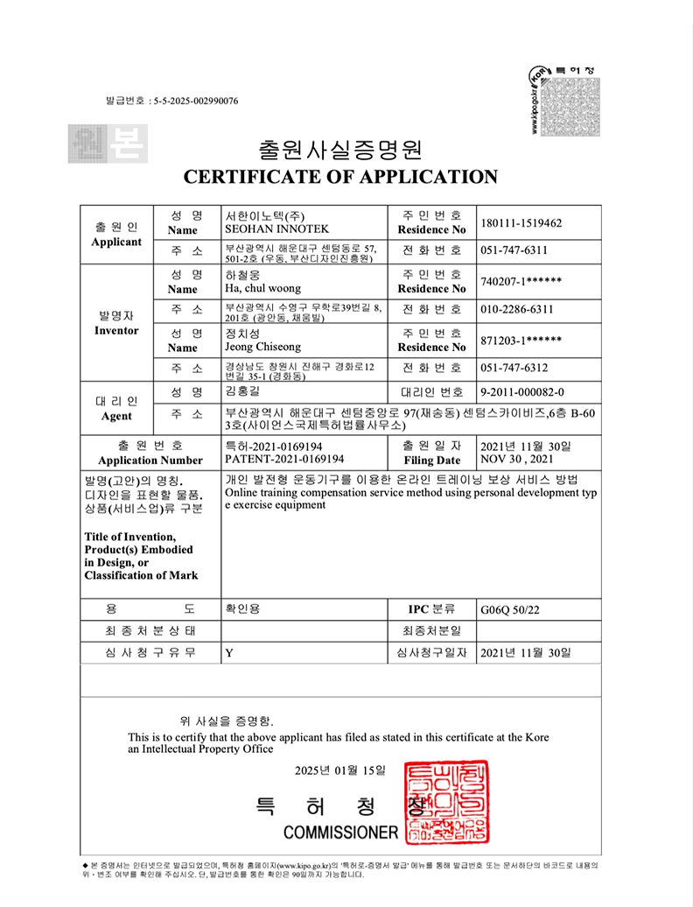
개인 발전형 운동기구를 이용한
온라인 트레이닝 보상 서비스 방법 -
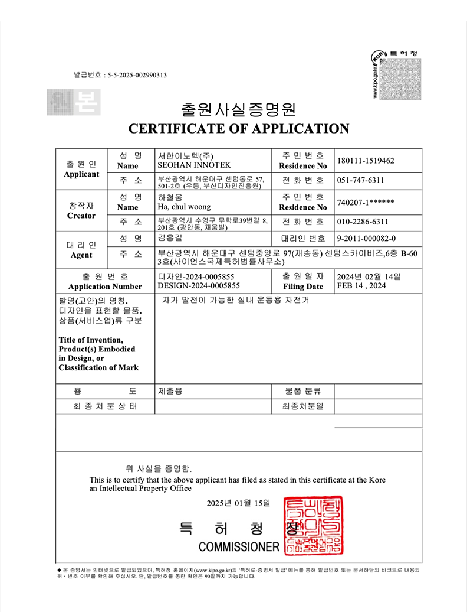
발전기용 고정자 디자인 특허
-
Cyrus 상표권
-
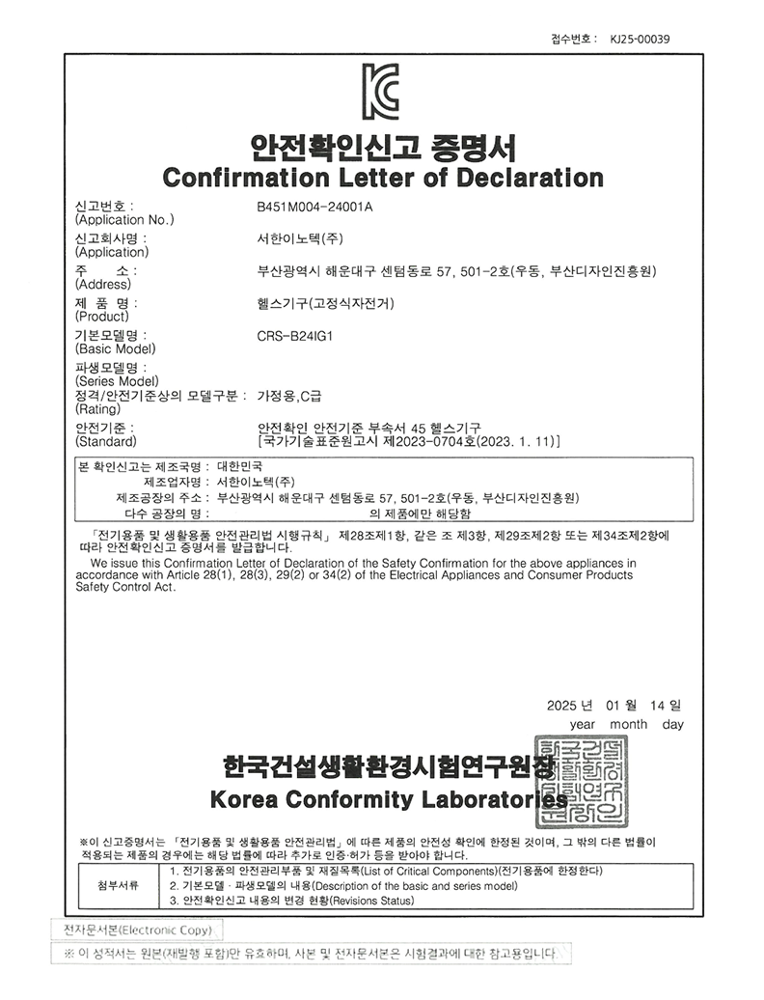
자가 발전이 가능한 실내 운동용 자전거
-
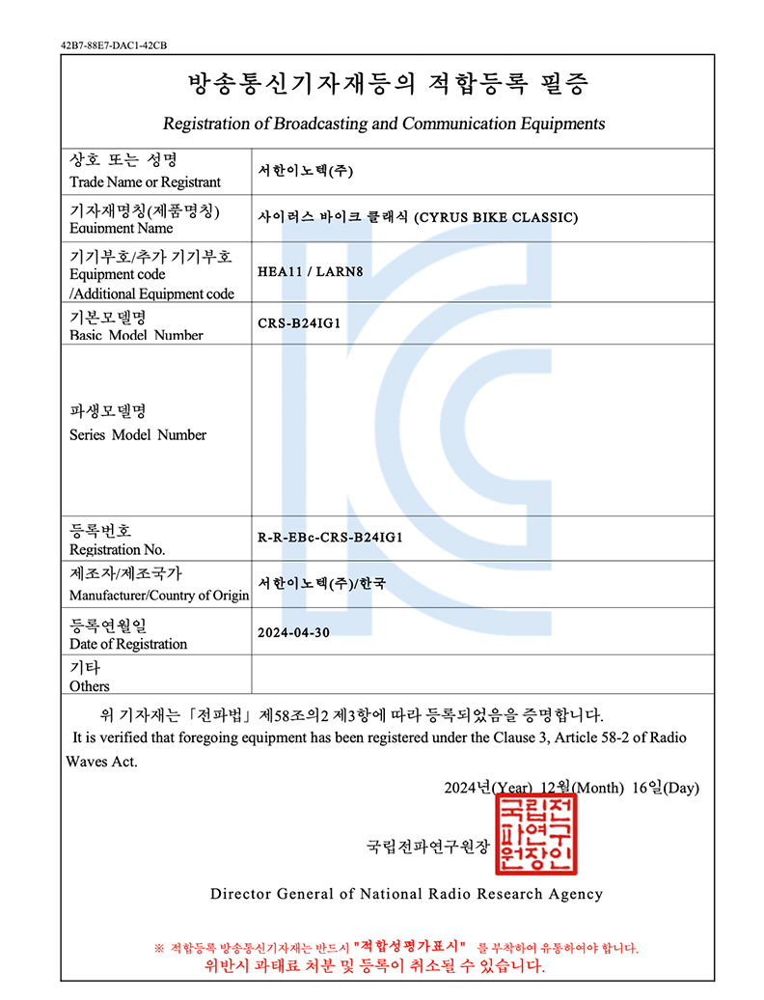
KC 생활안전인증
-
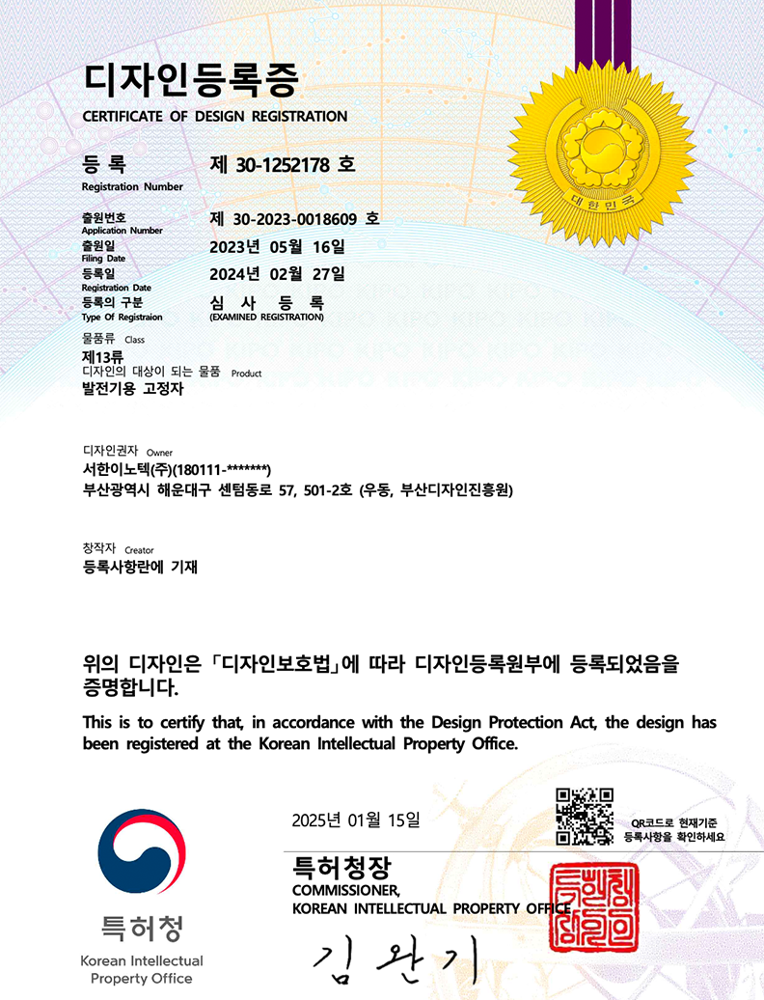
KC 전자파 적합등록필증